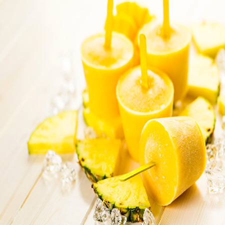

Chronicles Of A Young Mom
Home Page
Perfect Pineapple Pops

Prep time: About 1-2 hours Servings: 6
Ingredients:
- 2 c. plain yogurt
- ½ c. canned crushed pineapple (packed in its own juice instead of packed in syrup)
- 1 can frozen pineapple or orange-pineapple juice concentrate, thawed
Directions:
- Drain the can of crushed pineapple so all the juice runs out.
- Put all the ingredients in the bowl and mix together.
- Spoon the mixture into the paper cups. Fill them almost to the top.
- Stretch a small piece of plastic wrap across the top of each cup.
- Using the popsicle stick, poke a hole in the plastic wrap. Stand the stick straight up in the center of the cup.
- Put the cups in the freezer until the mixture is frozen solid.
- Remove the plastic wrap and peel away the paper cup. You'll have pineapple pops to eat and share!